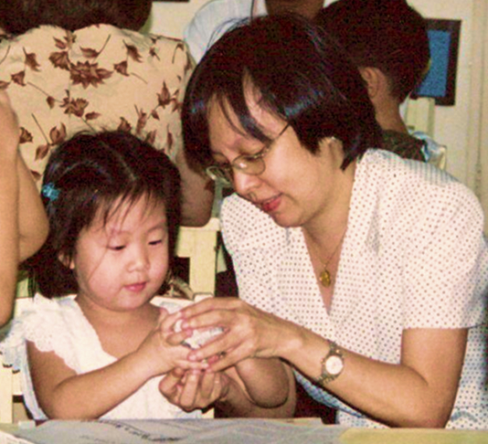
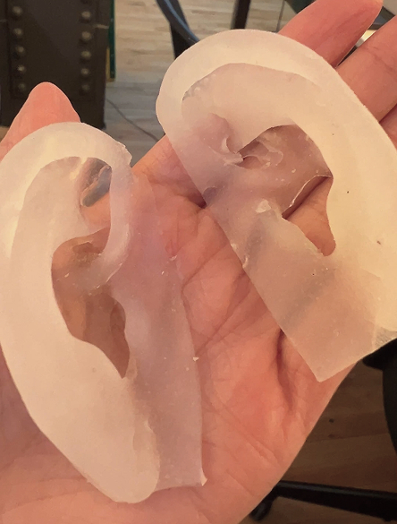
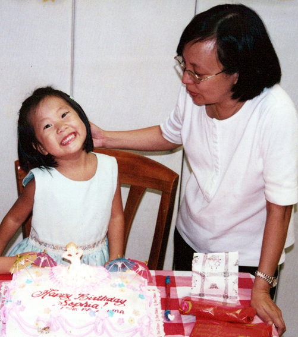
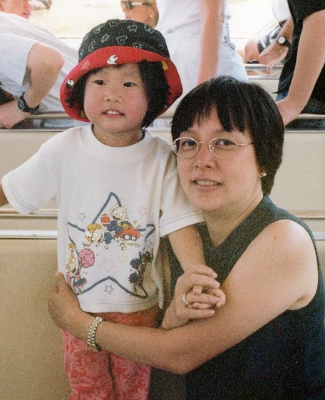
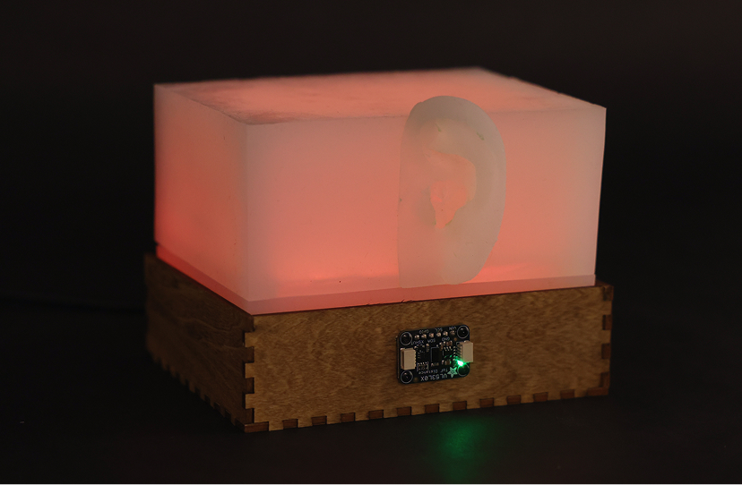
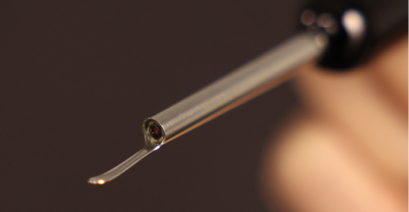

If she could see inside my head Sophia Tiutan, 2026
If she could see inside my head explores intimacy, vulnerability, and the quiet ways love is communicated through acts of care.
The installation is rooted in the artist’s childhood experience of having her mother clean her ears. During these exchanges, the artist must remain careful and still, creating a small and intimate space of focused attention between mother and child. Few words are exchanged, and the silence creates a space for thoughts that would otherwise remain unspoken. The work imagines a world in which, through this act of care, a mother could see beyond the body and into her child’s inner thoughts: things she wishes she could say, and things she chooses to keep to herself.
The installation asks the participant to enter this same state of stillness in order to engage with the work. This stillness acts as a gesture of presence and an invitation to slow down, become more aware, and experience intimacy through focused attention. As they remain present, the installation gradually awakens and internal thoughts become viewable only through the lens of an ear-cleaning camera, transforming an ordinary tool of care into a means of looking inward. Some thoughts are redacted, deliberately preserving what remains private.





